초록
모델 기반 강화학습(Model-based reinforcement learning) 방법들은 흔히 근사 동역학 모델(dynamics model)을 추정하는 용도로만 학습을 사용하고, 나머지 의사결정 작업은 고전적인 궤적 최적화기(trajectory optimizer)에 위임한다. 이러한 조합은 개념적으로는 간단하지만, 여러 실증적인 단점을 가지고 있어 학습된 모델이 표준적인 궤적 최적화에 잘 맞지 않을 수 있음을 시사한다. 본 논문에서는 모델로부터 샘플링하는 것과 이를 통해 플래닝(planning)하는 것이 거의 동일해지도록, 궤적 최적화 파이프라인을 모델링 문제에 최대한 통합하는 방안을 고찰한다. 우리 기술적 접근법의 핵심은 궤적을 반복적으로 디노이징(denoising)하여 플래닝을 수행하는 디퓨전 확률 모델(diffusion probabilistic model)에 있다. 우리는 분류기 가이드 샘플링(classifier-guided sampling)과 이미지 인페인팅(image inpainting)이 어떻게 일관된 플래닝 전략으로 재해석될 수 있는지 보여주고, 디퓨전 기반 플래닝 방법의 독특하고 유용한 특성들을 탐구하며, 장기적(long-horizon) 의사결정과 테스트 시간 유연성이 강조되는 제어 환경에서 우리 프레임워크의 효과를 입증한다.
1 서론
학습된 모델을 이용한 플래닝은 강화학습 및 데이터 기반 의사결정을 위한 개념적으로 단순한 프레임워크이다. 이 방법의 매력은 지도 학습 문제에 해당하는, 알려지지 않은 환경 동역학을 근사하는 데에만 학습 기술을 가장 성숙하고 효과적으로 적용한다는 점에 있다. 그 후, 학습된 모델은 원래의 맥락에서 마찬가지로 잘 이해되어 있는 고전적인 궤적 최적화 루틴 (Tassa et al., 2012; Posa et al., 2014; Kelly, 2017)에 결합될 수 있다.
그러나 이러한 조합이 설명대로 작동하는 경우는 드물다. 강력한 궤적 최적화기가 학습된 모델을 악용(exploit)하기 때문에, 이 절차를 통해 생성된 계획은 최적의 궤적이라기보다는 적대적 예제(adversarial examples)에 가깝게 보이는 경우가 많다 (Talvitie, 2014; Ke et al., 2018). 결과적으로, 현대의 모델 기반 강화학습 알고리즘은 궤적 최적화 도구상자보다는 가치 함수(value function)나 정책 그래디언트(policy gradient) (Wang et al., 2019)와 같은 모델 프리(model-free) 방법에서 더 많은 것을 상속받는다. 온라인 플래닝에 의존하는 방법들은 앞서 언급한 문제를 피하기 위해 무작위 슈팅(random shooting) (Nagabandi et al., 2018)이나 교차 엔트로피 방법(cross-entropy method) (Botev et al., 2013; Chua et al., 2018)과 같은 단순한 그래디언트 프리(gradient-free) 궤적 최적화 루틴을 사용하는 경향이 있다. †† 학습된 디노이징 과정의 코드와 시각화 자료는 diffusion-planning.github.io에서 확인할 수 있다.
본 연구에서는 데이터 기반 궤적 최적화에 대한 대안적인 접근법을 제안한다. 핵심 아이디어는 모델로부터 샘플링하는 것과 이를 통해 플래닝하는 것이 거의 동일해진다는 의미에서, 궤적 최적화에 직접적으로 적합한 모델을 학습시키는 것이다. 이 목표를 달성하려면 모델 설계 방식의 전환이 필요하다. 학습된 동역학 모델은 보통 환경 동역학의 대리자(proxy) 역할을 하도록 의도되므로, 기저의 인과 과정에 따라 모델을 구조화함으로써 성능 향상을 달성하는 경우가 많다 (Bapst et al., 2019). 대신에 우리는 모델이 사용될 플래닝 문제와 부합하도록 모델을 설계하는 방법을 고려한다. 예를 들어, 모델이 궁극적으로 플래닝에 사용될 것이기 때문에, 상태 동역학만큼이나 행동 분포(action distribution)가 중요하며, 단일 단계 오차(single-step error)보다 장기적 정확도(long-horizon accuracy)가 더 중요하다. 반면에, 모델은 학습 중에 보지 못한 작업을 포함하여 여러 작업에 사용될 수 있도록 보상 함수(reward function)에 대해 무관(agnostic)해야 한다. 마지막으로, 모델은 예측뿐만 아니라 그 계획(plan)도 경험에 따라 개선되고, 표준적인 슈팅 기반 플래닝 알고리즘의 근시안적인 실패 모드에 저항할 수 있도록 설계되어야 한다.
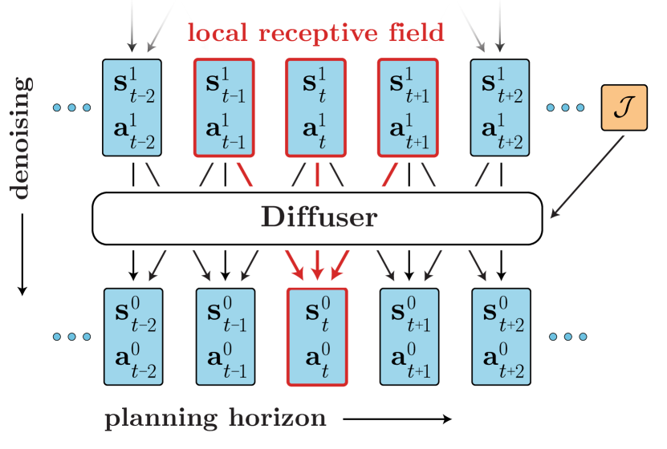
우리는 이 아이디어를 그림 2에 시각화된 Diffuser라고 불리는 궤적 수준의 디퓨전 확률 모델 (Sohl-Dickstein et al., 2015; Ho et al., 2020)로 구체화한다. 표준적인 모델 기반 플래닝 기법이 시간 순방향으로 자기회귀적(autoregressively)으로 예측하는 반면, Diffuser는 계획의 모든 타임스텝을 동시에 예측한다. 디퓨전 모델의 반복적인 샘플링 과정은 유연한 조건화(conditioning)를 가능하게 하여, 보조 가이드가 샘플링 절차를 수정하여 높은 리턴을 얻거나 일련의 제약 조건을 만족하는 궤적을 복원할 수 있도록 한다. 이러한 데이터 기반 궤적 최적화의 공식화는 몇 가지 매력적인 특성을 가진다:
장기적 확장성(Long-horizon scalability) Diffuser는 단일 단계 오차가 아니라 생성된 궤적의 정확도를 목표로 학습되므로, 단일 단계 동역학 모델의 누적 롤아웃 오차(compounding rollout error)로 고통받지 않으며 긴 플래닝 호라이즌에 대해 더 우아하게 확장된다.
작업 구성성(Task compositionality) 보상 함수는 계획을 샘플링하는 동안 사용될 보조 그래디언트를 제공하므로, 여러 보상의 그래디언트를 함께 더함으로써 동시에 여러 보상을 구성하여 플래닝하는 간단한 방법을 제공한다.
시간적 구성성(Temporal compositionality) Diffuser는 국소적 일관성을 반복적으로 개선하여 전역적으로 일관된 궤적을 생성하므로, 분포 내(in-distribution) 하위 시퀀스들을 이어 붙임으로써 새로운 궤적으로 일반화할 수 있다.
효과적인 비탐욕적 플래닝(Effective non-greedy planning) 모델과 플래너 사이의 경계를 흐림으로써, 모델의 예측을 개선하는 학습 절차가 결과적으로 플래닝 능력을 개선하는 효과도 갖게 된다. 이러한 설계는 많은 전통적인 플래닝 방법들이 해결하기 어려워하는 장기적이고 희소한 보상(sparse-reward) 문제를 해결할 수 있는 학습된 플래너를 낳는다.
본 연구의 핵심 기여는 궤적 데이터용으로 설계된 디노이징 디퓨전 모델과 이와 관련된 행동 합성을 위한 확률적 프레임워크이다. 심층 모델 기반 강화학습에서 일상적으로 사용되는 모델 유형에 비해 독특하지만, 우리는 Diffuser가 여러 유용한 특성을 가지고 있으며 특히 장기적 추론과 테스트 시간 유연성을 요구하는 오프라인 제어 환경에서 효과적임을 보여준다.
2 배경 지식
플래닝에 대한 우리의 접근법은 궤적 최적화 (Witkin & Kass, 1988; Tassa et al., 2012)를 사용한 행동 합성 분야의 이전 연구들을 학습 기반으로 모방한 것이다. 이 섹션에서는 궤적 최적화에서 고려하는 문제 설정과 해당 문제를 해결하기 위해 우리가 채택한 생성 모델 클래스에 대해 간략한 배경 지식을 제공한다.
2.1 문제 설정
상태 에서 행동 이 주어졌을 때 이산 시간 역학(discrete-time dynamics) 을 따르는 시스템을 고려하자. 경로 최적화(trajectory optimization)는 각 타임스텝별 보상(또는 비용) 의 합으로 분해되는 목적 함수 를 최대화(또는 최소화)하는 행동 시퀀스 를 찾는 것을 의미한다.
여기서 은 계획 수평선(planning horizon)이다. 우리는 교차된 상태와 행동의 경로를 나타내기 위해 약어 을 사용하고, 해당 경로의 목적 함수 값을 나타내기 위해 를 사용한다.
2.2 확산 확률 모델(Diffusion Probabilistic Models)
확산 확률 모델 (Sohl-Dickstein et al., 2015; Ho et al., 2020)은 데이터 생성 과정을 반복적인 노이즈 제거 과정 으로 상정한다. 이 노이즈 제거는 노이즈를 추가하여 데이터의 구조를 서서히 손상시키는 순방향 확산 과정(forward diffusion process) 의 역과정이다. 모델에 의해 유도되는 데이터 분포는 다음과 같이 주어진다:
여기서 은 표준 가우시안 사전분포(standard Gaussian prior)이고 은 (노이즈가 없는) 데이터를 나타낸다. 매개변수 는 역과정의 음의 로그 우도(negative log likelihood)에 대한 변분 하한(variational bound)을 최소화함으로써 최적화된다: 역과정은 종종 고정된 타임스텝 의존적 공분산을 가진 가우시안 분포로 매개변수화된다:
순방향 과정 은 일반적으로 사전에 지정된다.
표기법. 본 연구에는 두 가지 "시간"이 작용한다. 즉, 확산 과정의 시간과 계획 문제의 시간이다. 우리는 확산 타임스텝을 나타내기 위해 위첨자(지정되지 않은 경우 )를 사용하고, 계획 타임스텝을 나타내기 위해 아래첨자(지정되지 않은 경우 )를 사용한다. 예를 들어, 는 노이즈가 없는 경로에서의 상태를 나타낸다. 문맥상 모호하지 않은 경우, 노이즈가 없는 물리량의 위첨자는 생략된다: . 우리는 경로 에서의 상태(또는 행동)를 (또는 )로 지칭함으로써 표기법을 약간 중복하여 사용한다.
3 확산을 이용한 계획(Planning with Diffusion)
경로 최적화 기법을 사용하는 데 있어 가장 큰 장애물은 환경 역학 에 대한 지식이 필요하다는 점이다. 대부분의 학습 기반 방법들은 근사 역학 모델을 학습시키고 이를 기존의 계획 루틴에 플러그인함으로써 이 장애물을 극복하려고 시도한다. 그러나 학습된 모델은 실제(ground-truth) 모델을 염두에 두고 설계된 계획 알고리즘의 유형에 잘 맞지 않는 경우가 많으며, 이는 플래너가 적대적 예시(adversarial examples)를 찾아내어 학습된 모델을 악용하는 결과를 초래한다.
우리는 모델링과 계획 사이의 더 긴밀한 결합을 제안한다. 고전적인 플래너의 맥락에서 학습된 모델을 사용하는 대신, 계획 과정의 가능한 한 많은 부분을 생성 모델링 프레임워크에 흡수시켜 계획이 샘플링과 거의 동일해지도록 만든다. 우리는 경로의 확산 모델인 을 사용하여 이를 수행한다. 확산 모델의 반복적인 노이즈 제거 과정은 다음과 같은 형태의 섭동된 분포(perturbed distribution)로부터 샘플링하는 방식을 통해 유연한 조건화(conditioning)를 가능하게 한다:
| (1) |
함수 은 사전 증거(예: 관측 이력), 원하는 결과(예: 도달하고자 하는 목표), 또는 최적화할 일반적인 함수(예: 보상 또는 비용)에 대한 정보를 포함할 수 있다. 이 섭동된 분포에서 추론을 수행하는 것은 2.1절에서 제시된 경로 최적화 문제에 대한 확률론적 대응물로 볼 수 있는데, 이는 하에서 물리적으로 현실적이면서 동시에 하에서 높은 보상을 받거나(또는 제약 조건을 만족하는) 경로를 찾아야 하기 때문이다. 역학 정보가 섭동 분포 와 분리되어 있기 때문에, 단일 확산 모델 를 동일한 환경의 여러 작업에 재사용할 수 있다.
본 섹션에서는 학습된 경로 최적화를 위해 설계된 확산 모델인 Diffuser를 설명한다. 그 후, 분류기 가이드 샘플링(classifier-guided sampling) 및 이미지 인페인팅(image inpainting)의 강화 학습 대응물로 구현된 Diffuser 기반 계획의 두 가지 구체적인 사례를 논의한다.
3.1 경로 계획을 위한 생성 모델
시간적 순서(Temporal ordering). 경로 모델로부터 샘플링하는 것과 이를 통해 계획하는 것 사이의 경계를 흐리게 하면 특이한 제약 조건이 발생한다. 즉, 더 이상 상태를 시간 순서대로 자기회귀적(autoregressively)으로 예측할 수 없다는 점이다. 목표 조건부 추론 을 고려해 보자. 다음 상태 은 이전 상태뿐만 아니라 미래의 상태에도 의존한다. 이 예시는 더 일반적인 원리의 한 사례이다. 현재가 과거에 의해 결정된다는 점에서 역학 예측은 인과적(causal)인 반면, 현재의 결정이 미래에 조건부라는 점에서 의사 결정 및 제어는 반인과적(anti-causal)일 수 있다.111 일반적인 강화 학습 맥락에서, 미래에 대한 조건화는 동적 계획법(dynamic programming) 재귀식을 작성하기 위해 미래의 최적성을 가정하는 것에서 비롯된다. 구체적으로, 이는 행동 분포 에서 미래 최적성 변수 로 나타난다 (Levine, 2018). 시간적 자기회귀 순서를 사용할 수 없기 때문에, 우리는 계획의 모든 타임스텝을 동시에 예측하도록 Diffuser를 설계한다.
시간적 국소성(Temporal locality). 자기회귀적이거나 마르코프 성질(Markovian)을 갖지 않음에도 불구하고, Diffuser는 완화된 형태의 시간적 국소성을 특징으로 한다. 그림 2에서는 단일 시간 합성곱(temporal convolution)으로 구성된 확산 모델의 의존성 그래프를 묘사한다. 주어진 예측의 수용 영역(receptive field)은 과거와 미래 모두에서 오직 인접한 타임스텝들로만 구성된다. 결과적으로, 노이즈 제거 과정의 각 단계는 경로의 국소적 일관성(local consistency)만을 기반으로 예측을 수행할 수 있다. 그러나 이러한 노이즈 제거 단계를 여러 번 결합함으로써, 국소적 일관성이 전역적 일관성(global coherence)을 이끌어낼 수 있다.
경로 표현(Trajectory representation). Diffuser는 계획을 위해 설계된 경로 모델이며, 이는 모델로부터 유도된 제어기(controller)의 효과가 상태 예측의 품질만큼이나 중요하다는 것을 의미한다. 결과적으로 경로 내의 상태와 행동은 공동으로 예측되며, 예측의 목적상 행동은 단순히 상태의 추가적인 차원으로 취급된다. 구체적으로, 우리는 Diffuser의 입력(및 출력)을 다음과 같은 2차원 배열로 표현한다:
| (2) |
계획 수평선의 타임스텝당 하나의 열을 갖는다.
아키텍처. 이제 Diffuser 아키텍처를 규정하는 데 필요한 요소들을 갖추었다: (1) 전체 경로가 비자기회귀적(non-autoregressively)으로 예측되어야 하고, (2) 노이즈 제거 과정의 각 단계가 시간적으로 국소적이어야 하며, (3) 경로 표현이 한 차원(계획 수평선)을 따라서는 등변성(equivariance)을 허용하되 다른 차원(상태 및 행동 특징)에 대해서는 허용하지 않아야 한다. 우리는 반복되는 (시간적) 합성곱 잔차 블록(convolutional residual blocks)으로 구성된 모델을 통해 이러한 기준을 충족한다. 전체적인 아키텍처는 이미지 기반 확산 모델에서 성공을 거둔 U-Net 유형과 유사하지만, 2차원 공간 합성곱이 1차원 시간 합성곱으로 대체되었다(그림 A1). 모델이 완전 합성곱(fully convolutional)이기 때문에, 예측의 수평선은 모델 아키텍처가 아니라 입력 차원에 의해 결정되며, 원하는 경우 계획 수립 중에 동적으로 변경될 수 있다.
학습. 우리는 궤적 디노이징(denoising) 과정의 학습된 그래디언트 를 매개변수화하기 위해 Diffuser를 사용하며, 이로부터 평균 을 닫힌 형식(closed form) (Ho et al., 2020)으로 풀 수 있다. 우리는 다음과 같이 주어지는 -모델 학습을 위한 단순화된 목적 함수를 사용한다:
여기서 은 확산(diffusion) 타임스텝이고, 은 노이즈 타깃이며, 는 노이즈 가 추가되어 손상된 궤적 이다. 역과정 공분산 는 Nichol & Dhariwal (2021)의 코사인 스케줄을 따른다.
a
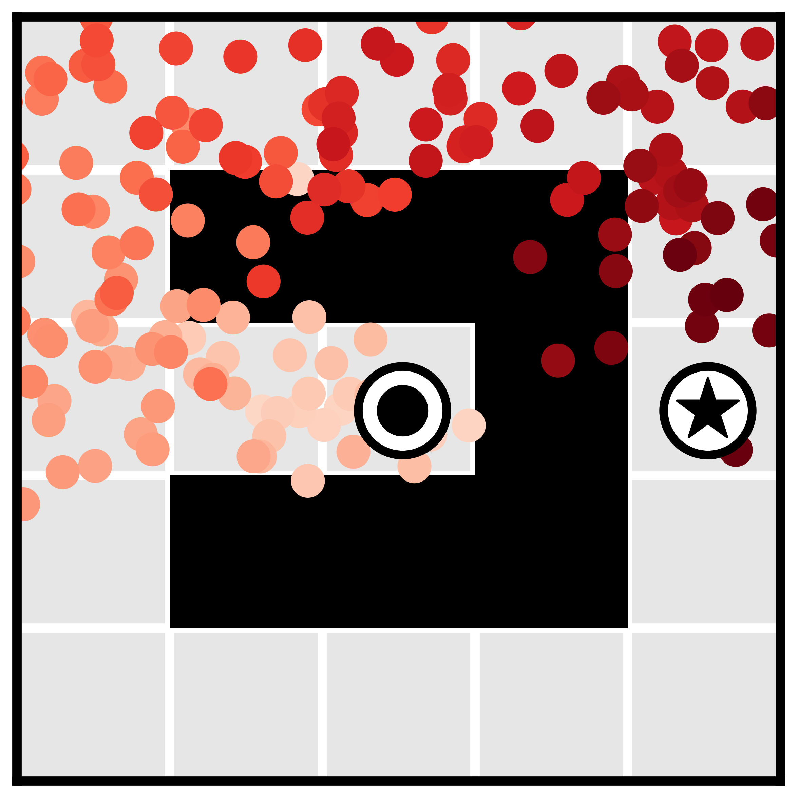
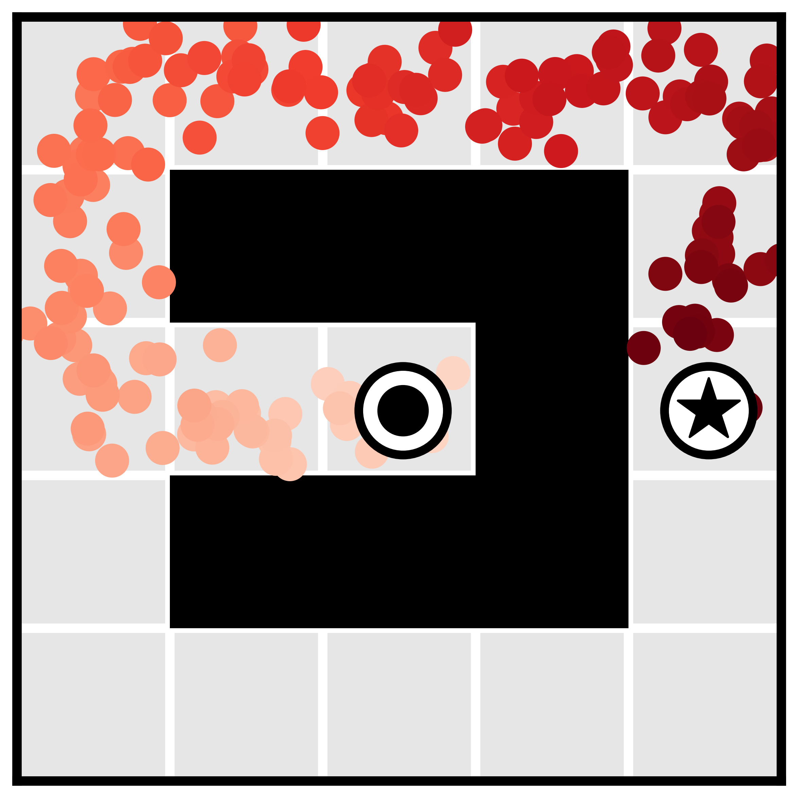
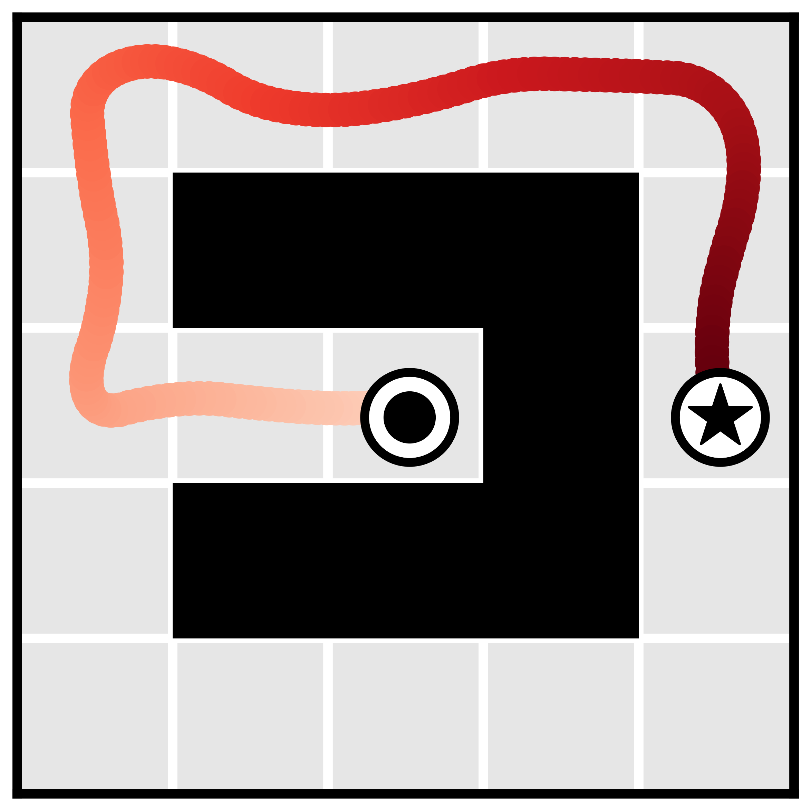
디노이징
b
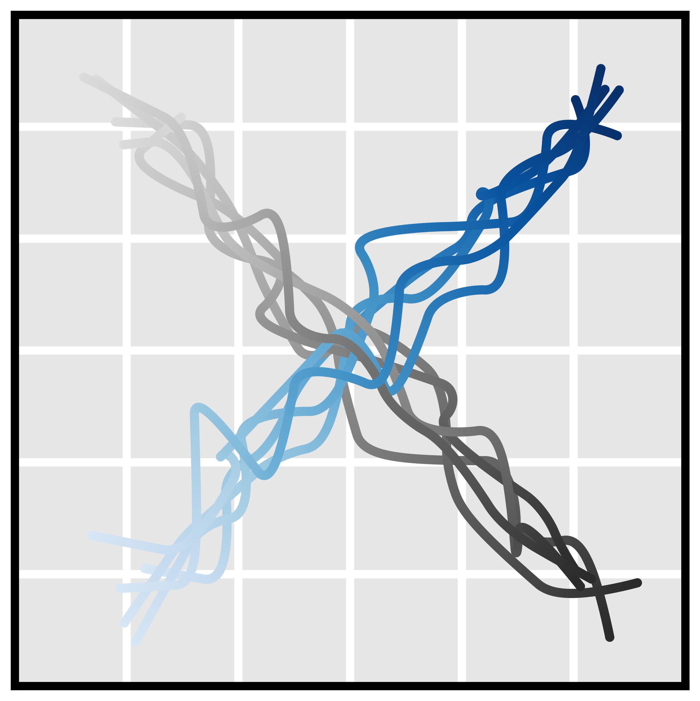
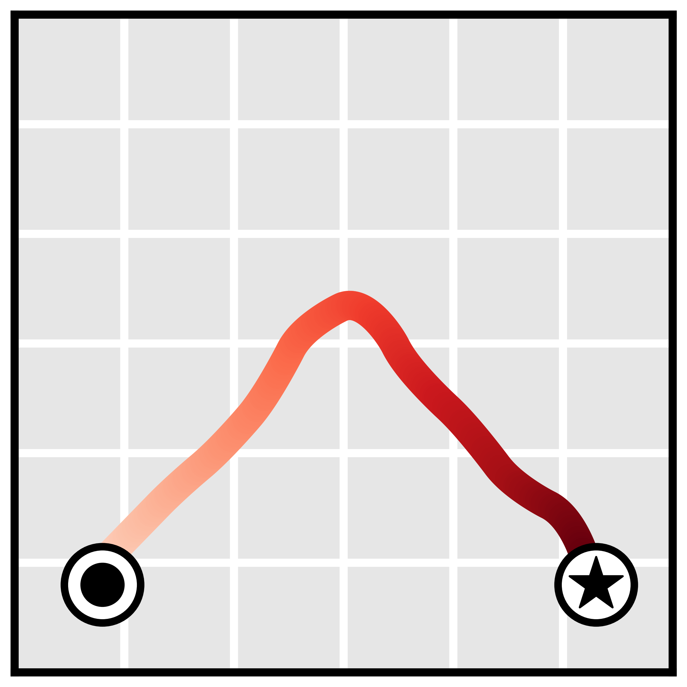
데이터 계획
c
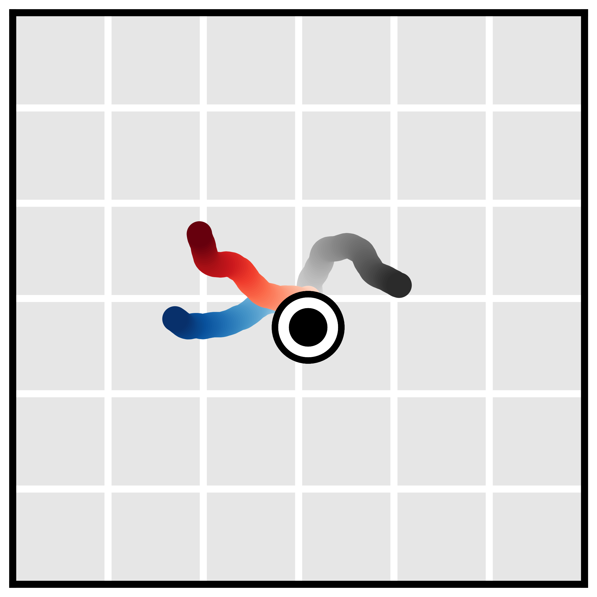
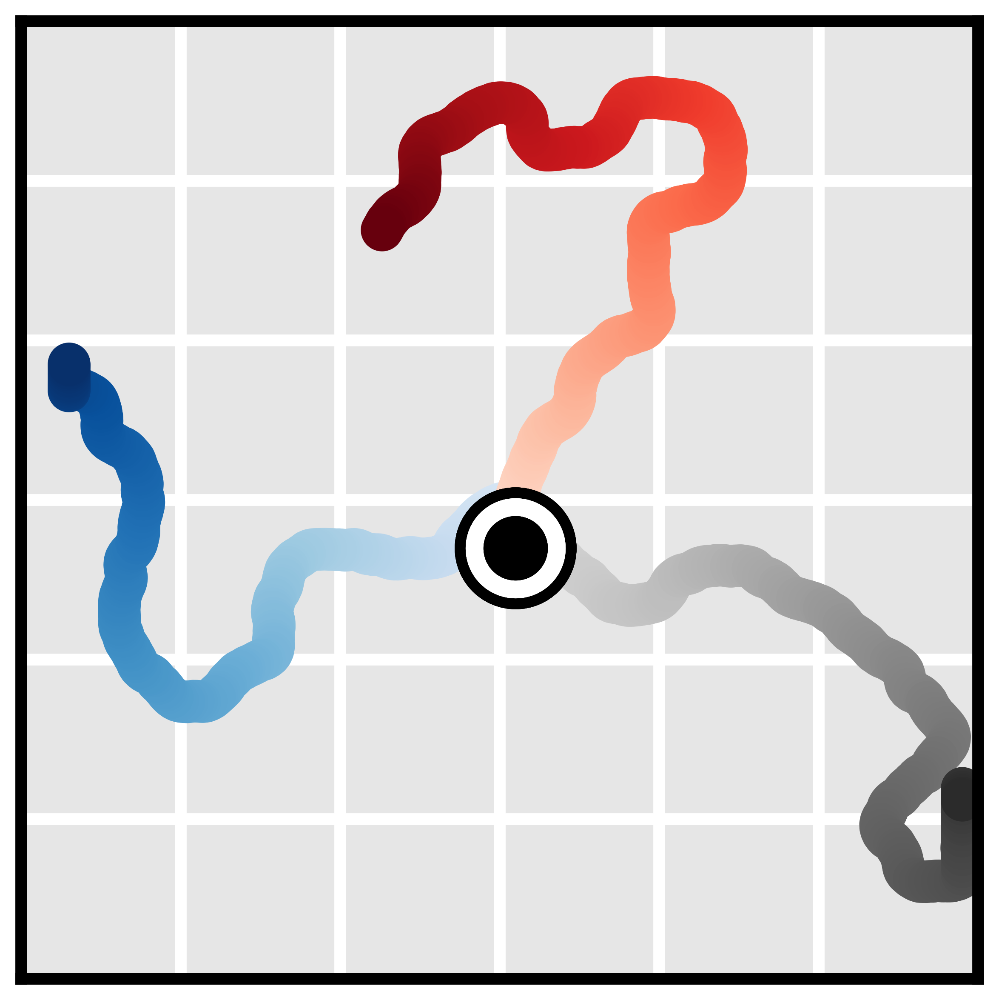
d
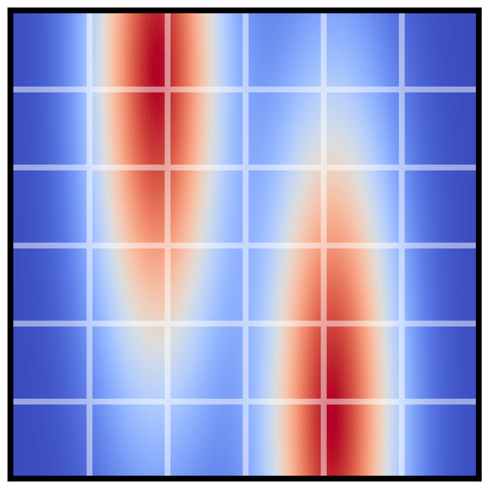
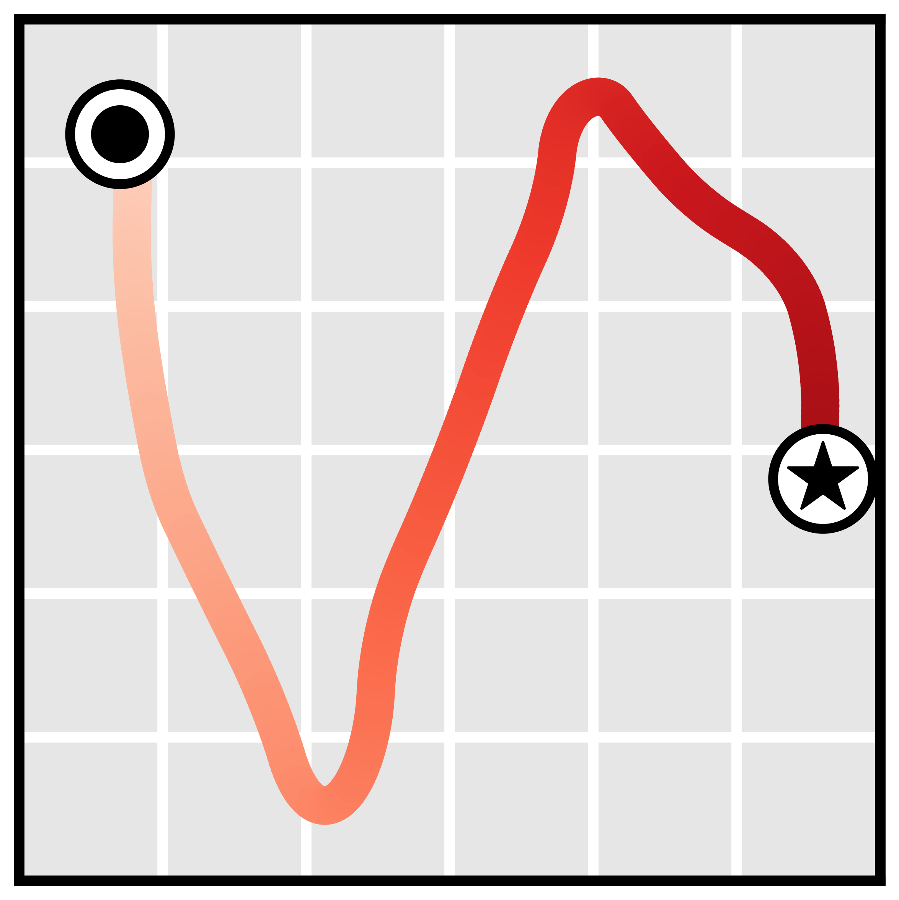
보상 계획
 은 목표 상태를 나타낸다.
은 목표 상태를 나타낸다.
3.2 가이드 기반 샘플링으로서의 강화학습
Diffuser를 사용하여 강화학습 문제를 해결하기 위해서는 보상(reward)의 개념을 도입해야 한다. 이를 위해 우리는 추론으로서의 제어(control-as-inference) 그래픽 모델 (Levine, 2018)을 활용한다. 을 궤적의 타임스텝 의 최적성(optimality)을 나타내는 이진 무작위 변수라 하고, 이라 하자. 식 1에서 로 설정함으로써 최적의 궤적 집합으로부터 샘플링할 수 있다:
우리는 강화학습 문제를 조건부 샘플링(conditional sampling) 문제로 전환하였다. 다행히도 확산 모델을 이용한 조건부 샘플링에 대한 선행 연구가 많이 존재한다. 이 분포로부터 정확하게 샘플링하는 것은 불가능하지만, 이 충분히 매끄러울 때 역 확산 과정의 전이는 가우시안 (Sohl-Dickstein et al., 2015)으로 근사될 수 있다:
| (3) |
여기서 은 원래의 역과정 전이 의 매개변수이며,
이 관계는 클래스 조건부 이미지 생성 (Dhariwal & Nichol, 2021)에 사용되는 분류기 가이드 기반 샘플링(classifier-guided sampling)과 강화학습 문제 설정 사이의 직관적인 변환을 제공한다. 우리는 먼저 사용 가능한 모든 궤적 데이터의 상태와 행동에 대해 확산 모델 을 학습시킨다. 그 다음, 궤적 샘플 의 누적 보상을 예측하기 위해 별도의 모델 를 학습시킨다. 의 그래디언트는 식 3에 따라 역과정의 평균 을 수정함으로써 궤적 샘플링 과정을 가이드하는 데 사용된다. 샘플링된 궤적의 첫 번째 행동 이 환경에서 실행될 수 있으며, 그 후 표준 후퇴 호라이즌 제어(receding-horizon control) 루프에서 플래닝 절차가 다시 시작된다. 가이드 기반 플래닝 방법에 대한 의사코드는 알고리즘 1에 제시되어 있다.
3.3 인페인팅으로서의 목표 조건부 강화학습
일부 플래닝 문제는 보상 극대화보다 제약 조건 만족(constraint satisfaction)으로 표현하는 것이 더 자연스럽다. 이러한 설정에서 목표는 목표 위치에서의 종료와 같은 일련의 제약 조건을 만족하는 임의의 실행 가능한 궤적을 생성하는 것이다. 식 2에 의해 기술된 궤적의 2차원 배열 표현을 활용하면, 이 설정은 상태 및 행동 제약 조건이 이미지에서 관측된 픽셀과 유사하게 작용하는 인페인팅 문제(inpainting problem) (Sohl-Dickstein et al., 2015)로 변환될 수 있다. 배열에서 관측되지 않은 모든 위치는 관측된 제약 조건과 일치하도록 확산 모델에 의해 채워져야 한다.
이 태스크에 필요한 섭동 함수(perturbation function)는 관측된 값에 대해서는 디랙 델타(Dirac delta) 함수이고 다른 곳에서는 상수이다. 구체적으로, 만약 이 타임스텝 에서의 상태 제약 조건이라면, 다음과 같다:
행동 제약 조건에 대한 정의도 동일하다. 실제로는 섭동되지 않은 역과정 으로부터 샘플링하고, 모든 확산 타임스텝 이후에 샘플링된 값을 조건화 값 으로 대체함으로써 이를 구현할 수 있다.
모든 샘플링된 궤적은 현재 상태에서 시작해야 하므로 보상 극대화 문제조차도 인페인팅을 통한 조건화(conditioning-by-inpainting)가 필요하다. 이 조건화는 알고리즘 1의 10번째 줄에 기술되어 있다.
4 디퓨전 플래너의 특징
우리는 디퓨저(Diffuser)의 여러 중요한 특징들을 논의하며, 특히 표준 역학 모델(dynamics models)과 구별되거나 비자기회귀적(non-autoregressive) 궤적 예측에서 흔치 않은 특징들에 초점을 맞춘다.
학습된 장기 호라이즌 계획 수립(Long-horizon planning). 단일 단계(Single-step) 모델은 일반적으로 실제 환경 역학의 대리 모델(proxy)로 사용되며 , 따라서 특정 계획 수립 알고리즘에 종속되지 않는다. 반면, 알고리즘 1의 계획 수립 루틴은 디퓨전 모델 고유의 어포던스(affordance)와 밀접하게 연결되어 있다. 우리의 계획 수립 방법은 샘플링과 거의 동일하기 때문에(유일한 차이점은 섭동 함수(perturbation function) 에 의한 가이드뿐이다), 디퓨저의 장기 호라이즌 예측자로서의 효과성은 효과적인 장기 호라이즌 계획 수립으로 직접 이어진다. 우리는 그림 3a에서 목표 도달(goal-reaching) 설정을 통해 학습된 계획 수립의 이점을 보여주며, 슈팅 기반(shooting-based) 접근법이 어려움을 겪는 것으로 알려진 희소한 보상(sparse reward) 설정에서도 디퓨저가 실행 가능한 궤적을 생성할 수 있음을 보여준다. 이 문제 설정의 더 정량적인 버전은 섹션 5.1에서 탐구한다.
시간적 구성성(Temporal compositionality). 단일 단계 모델은 종종 마르코프 성질(Markov property)을 기반으로 정당화되며, 이를 통해 분포 내(in-distribution) 전이를 구성하여 분포 외(out-of-distribution) 궤적으로 일반화할 수 있다. 디퓨저는 국소적 일관성(local consistency)을 반복적으로 개선함으로써 전역적으로 일관된 궤적을 생성하므로(섹션 3.1), 익숙한 하위 시퀀스들을 새로운 방식으로 이어 붙일(stitch) 수도 있다. 그림 3b에서, 우리는 직선으로만 이동하는 궤적으로 디퓨저를 학습시키고, 교차점에서 궤적들을 구성함으로써 V자형 궤적으로 일반화할 수 있음을 보여준다.
가변 길이 계획. 우리 모델은 예측의 호라이즌 차원에 대해 완전 합성곱(fully convolutional) 구조를 가지므로, 계획 수립 호라이즌이 아키텍처 선택에 의해 고정되지 않는다. 대신, 노이즈 제거(denoising) 프로세스를 초기화하는 입력 노이즈 의 크기에 의해 결정되므로 가변 길이 계획이 가능하다(그림 3c).
태스크 구성성(Task compositionality). 디퓨저는 환경 역학과 행동에 대한 정보를 모두 포함하고 있지만, 보상 함수와는 독립적이다. 모델이 가능한 미래에 대한 사전 분포(prior) 역할을 하기 때문에, 계획 수립은 서로 다른 보상에 대응하는 비교적 가벼운 섭동 함수 (또는 여러 섭동의 조합)에 의해 가이드될 수 있다. 우리는 디퓨전 모델 학습 중에는 보지 못한 새로운 보상 함수에 대해 계획을 수립함으로써 이를 실증한다(그림 3d).
| Environment | MPPI | CQL | IQL | Diffuser |
| Maze2D U-Maze | 113.9 | |||
| Maze2D Medium | 121.5 | |||
| Maze2D Large | 123.0 | |||
| Single-task Average | 16.2 | 7.7 | 47.0 | 119.5 |
| Multi2D U-Maze | - | 128.9 | ||
| Multi2D Medium | - | 127.2 | ||
| Multi2D Large | - | 132.1 | ||
| Multi-task Average | 21.5 | - | 16.9 | 129.4 |
5 실험적 평가
우리 실험의 초점은 데이터 기반 플래너(data-driven planner)에 요구되는 기능들을 중심으로 디퓨저를 평가하는 것이다. 특히, 다음을 평가한다. (1) 수동적인 보상 설계(reward shaping) 없이 장기 호라이즌에 걸쳐 계획을 수립하는 능력, (2) 학습 중에 보지 못한 새로운 목표 구성으로 일반화하는 능력, 그리고 (3) 다양한 품질의 이종 데이터(heterogeneous data)로부터 효과적인 컨트롤러를 복원하는 능력. 마지막으로, 성능 저하를 최소화하면서 계획 수립 절차를 가속화하는 가장 효과적인 방법을 포함하여, 디퓨전 기반 계획 수립의 실제 실행 시간(runtime) 고려 사항을 연구하며 마무리한다.
5.1 장기 호라이즌 다중 태스크 계획 수립
우리는 Maze2D 환경 (Fu et al., 2020)에서 장기 호라이즌 계획 수립을 평가한다. 이 환경은 보상 1이 주어지는 목표 위치까지 이동해야 한다. 그 외의 다른 위치에서는 보상 설계가 제공되지 않는다. 목표 위치에 도달하는 데 수백 단계가 걸릴 수 있기 때문에, 가장 우수한 모델 프리 알고리즘조차도 적절한 신용 할당(credit assignment)을 수행하고 안정적으로 목표에 도달하는 데 어려움을 겪는다(표 1).
우리는 시작 위치와 목표 위치를 조건으로 부여하기 위해 인페인팅(inpainting) 전략을 사용하여 디퓨저로 계획을 수립한다. (목표 위치는 모델 프리 방법들도 사용할 수 있으며, 데이터셋에서 보상이 0이 아닌 유일한 상태라는 점을 통해 식별 가능하다.) 그 후 샘플링된 궤적을 오픈 루프(open-loop) 계획으로 사용한다. 디퓨저는 모든 미로 크기에서 100 이상의 점수를 달성하며, 이는 기준이 되는 전문가 정책(expert policy)보다 우수한 성능을 보임을 나타낸다. 우리는 그림 4에서 디퓨저의 계획을 생성하는 역디퓨전(reverse diffusion) 과정을 시각화한다.
Maze2D의 학습 데이터는 무방향성(undirected)이지만(무작위로 선택된 위치를 오가는 컨트롤러로 구성됨), 평가는 목표가 항상 동일한 단일 태스크로 이루어진다. 다중 태스크 유연성을 테스트하기 위해, 우리는 각 에피소드가 시작될 때 목표 위치를 무작위로 변경하도록 환경을 수정한다. 이 설정은 표 1에서 Multi2D로 표시된다. 디퓨저는 본질적으로 다중 태스크 플래너이므로, 단일 태스크 실험에서 사용한 모델을 재학습할 필요 없이 단순히 조건부 목표만 변경하면 된다. 그 결과, 디퓨저는 다중 태스크 설정에서도 단일 태스크 설정만큼 뛰어난 성능을 발휘한다. 반면, 단일 태스크 설정에서 가장 우수했던 모델 프리 알고리즘(IQL; Kostrikov et al. 2022)은 다중 태스크 설정에 적용했을 때 성능이 크게 저하된다. 사후 경험 재라벨링(hindsight experience relabeling) (Andrychowicz et al., 2017)을 적용한 다중 태스크 IQL의 세부 사항은 부록 A에 제공된다. MPPI는 실제 역학(ground-truth dynamics)을 사용하지만, 디퓨저의 학습된 계획 수립 알고리즘에 비해 성능이 저조한 것은 예측 오차가 없는 상황에서도 장기 호라이즌 계획 수립이 얼마나 어려운지를 잘 보여준다.
U-미로
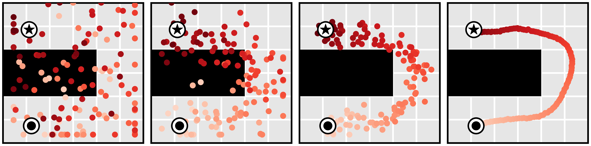
중형
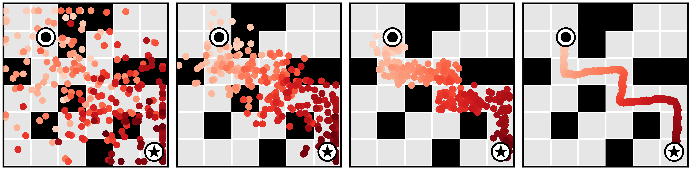
대형
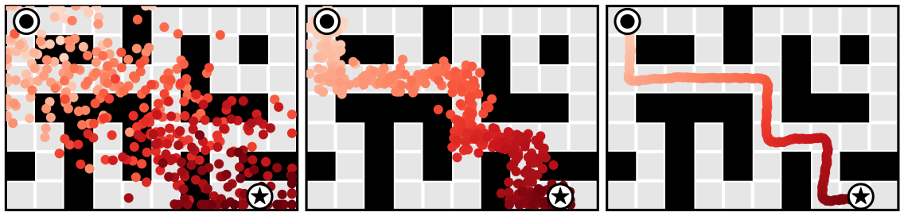
노이즈 제거
 및 목표 조건
과 일치하는 궤적을 샘플링하여 계획을 생성한다.
나머지 상태들은 노이즈 제거 프로세스에 의해 "인페인팅"된다.
및 목표 조건
과 일치하는 궤적을 샘플링하여 계획을 생성한다.
나머지 상태들은 노이즈 제거 프로세스에 의해 "인페인팅"된다.
| Dataset | Environment | BC | CQL | IQL | DT | TT | MOPO | MOReL | MBOP | Diffuser |
| Medium-Expert | HalfCheetah | 105.9 | ||||||||
| Medium-Expert | Hopper | 105.4 | 107.6 | 110.0 | 108.7 | |||||
| Medium-Expert | Walker2d | 107.5 | 108.8 | 109.6 | 108.1 | 106.9 | ||||
| Medium | HalfCheetah | 47.4 | 46.9 | |||||||
| Medium | Hopper | 95.4 | ||||||||
| Medium | Walker2d | 78.3 | 79.0 | 77.8 | 79.6 | |||||
| Medium-Replay | HalfCheetah | 53.1 | ||||||||
| Medium-Replay | Hopper | 95.0 | 94.7 | 91.5 | 93.6 | 93.6 | ||||
| Medium-Replay | Walker2d | 82.6 | ||||||||
| Average | 51.9 | 77.6 | 77.0 | 74.7 | 78.9 | 42.1 | 72.9 | 47.8 | 77.5 | |
5.2 테스트 시간 유연성
새로운 테스트 시간 목표에 대한 일반화 능력을 평가하기 위해, 우리는 세 가지 설정으로 구성된 블록 쌓기 작업 세트를 구축한다: (1) 무조건부 쌓기(Unconditional Stacking), 가능한 한 높은 블록 탑을 쌓는 것이 목표인 작업; (2) 조건부 쌓기(Conditional Stacking), 지정된 순서대로 블록 탑을 쌓는 것이 목표인 작업; (3) 재배치(Rearrangement), 새로운 배열에서 기준 블록들의 위치 세트를 일치시키는 것이 목표인 작업. 우리는 PDDLStream (Garrett et al., 2020)에 의해 생성된 데모의 10000개 궤적으로 모든 방법을 학습시킨다. 보상은 성공적으로 블록을 쌓았을 때 1이고, 그렇지 않으면 0이다. 이러한 블록 쌓기는 테스트 시간 유연성을 진단하는 까다로운 평가 항목이다. 무작위로 지정된 목표를 위해 부분적인 쌓기를 수행하는 과정에서, 컨트롤러는 학습 구성에 포함되지 않은 새로운 상태로 진입하게 된다.
우리는 모든 블록 쌓기 작업에 하나의 학습된 Diffuser를 사용하며, 설정에 따라 섭동 함수(perturbation function) 만 수정한다. 무조건부 쌓기 작업에서는 PDDLStream 컨트롤러를 모방하기 위해 섭동이 없는 노이즈 제거 과정(denoising process) 에서 직접 샘플링한다. 조건부 쌓기 및 재배치 작업에서는 샘플링된 궤적에 편향을 주기 위해 두 개의 섭동 함수 를 결합한다: 첫 번째는 궤적의 최종 상태가 목표 구성과 일치할 가능성(likelihood)을 최대화하고, 두 번째는 쌓기 동작 중에 말단 효과기(end effector)와 큐브 사이의 접촉 제약 조건을 강제한다. (자세한 내용은 부록 B 참조.)
| Environment | BCQ | CQL | Diffuser |
|---|---|---|---|
| Unconditional Stacking | 58.7 | ||
| Conditional Stacking | 0.0 | 0.0 | 45.6 |
| Rearrangement | 0.0 | 0.0 | 58.9 |
| Average | 0.0 | 8.1 | 54.4 |
우리는 두 가지 기존 모델 프리 오프라인 강화학습 알고리즘인 BCQ (Fujimoto et al., 2019) 및 CQL (Kumar et al., 2020)과 비교하며, 무조건부 쌓기에는 표준 변형을, 조건부 쌓기 및 재배치에는 목표 조건부(goal-conditioned) 변형을 학습시킨다. (베이스라인 세부 사항은 부록 A에 제공된다.) 정량적 결과는 표 3에 제시되어 있으며, 여기서 100점은 작업을 완벽하게 수행한 것에 해당한다. Diffuser는 기존의 두 방법 모두를 크게 능가하며, 유연한 행동 생성을 요구하는 조건부 설정은 모델 프리 알고리즘에 특히 어려운 것으로 입증되었다. Diffuser에 의한 실행 과정의 시각적 묘사는 그림 5에 제공된다.
5.3 오프라인 강화학습
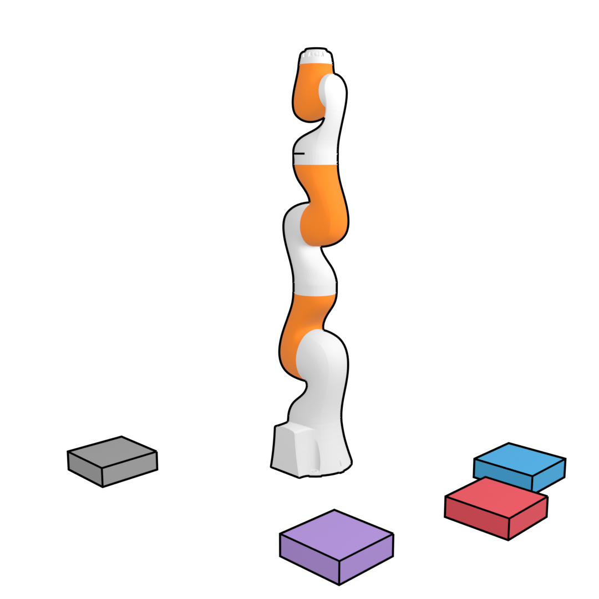
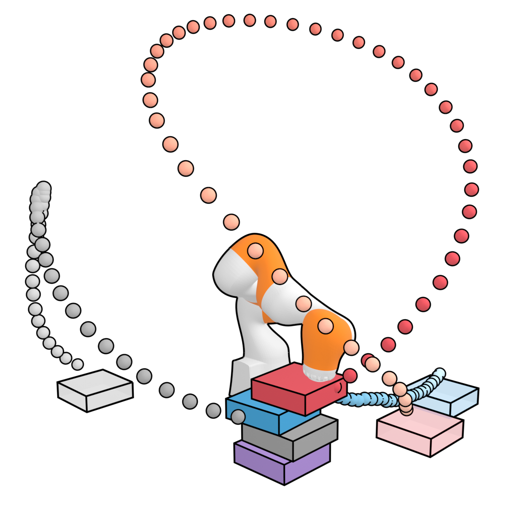
마지막으로, 우리는 D4RL 오프라인 보행 제어 제품군 (Fu et al., 2020)을 사용하여 다양한 품질의 이종 데이터로부터 효과적인 단일 작업 컨트롤러를 복구하는 능력을 평가한다. 우리는 3.2절에서 설명한 샘플링 절차를 사용하여 Diffuser가 생성한 궤적을 고보상 영역으로 안내하고, 3.3절에서 설명한 인페인팅(inpainting) 절차를 사용하여 현재 상태에 맞게 궤적을 조건화한다. 보상 예측기 는 확산 모델과 동일한 궤적으로 학습된다.
우리는 데이터 기반 제어에 대한 다른 접근 방식을 아우르는 다양한 기존 알고리즘과 비교한다. 여기에는 모델 프리 강화학습 알고리즘인 CQL (Kumar et al., 2020) 및 IQL (Kostrikov et al., 2022), Decision Transformer(DT; Chen et al. 2021b)와 같은 리턴 조건부(return-conditioning) 접근 방식, 그리고 Trajectory Transformer(TT; Janner et al. 2021), MOPO (Yu et al., 2020), MOReL (Kidambi et al., 2020), MBOP (Argenson & Dulac-Arnold, 2021)을 포함한 모델 기반 강화학습 접근 방식이 포함된다. 단일 작업 설정에서 Diffuser는 기존 알고리즘들과 대등한 성능을 보인다. 모델 기반인 MOReL 및 MBOP, 리턴 조건부인 DT보다는 우수하지만, 단일 작업 성능을 위해 특별히 설계된 최상의 오프라인 기법들보다는 성능이 낮다. 우리는 또한 MPPI (Williams et al., 2015)와 같은 기존의 궤적 최적화기에서 Diffuser를 다이내믹스 모델로 사용하는 변형을 조사했으나, 이 조합은 무작위 수준보다 나을 것이 없는 성능을 보였다. 이는 Diffuser의 효과가 향상된 개루프(open-loop) 예측 정확도가 아니라, 모델링과 계획의 결합에서 비롯됨을 시사한다.
노이즈 제거
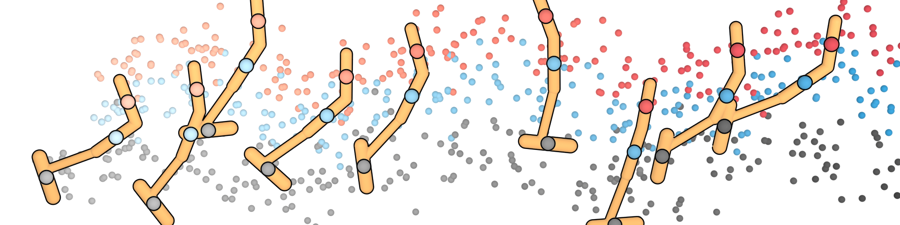
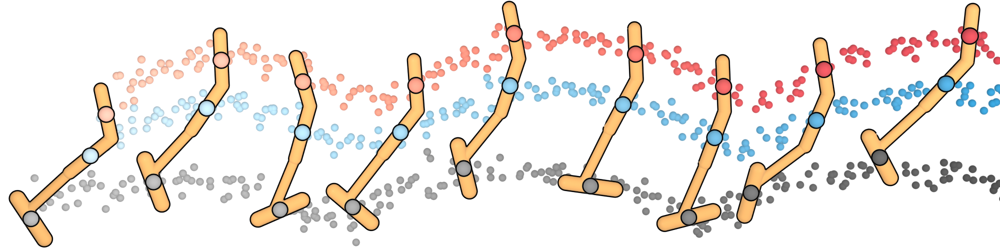
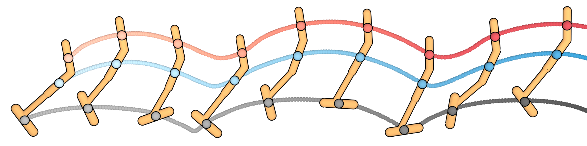
계획 수평선(planning horizon)
5.4 더 빠른 계획 수립을 위한 웜스타트 확산
Diffuser의 한계는 (반복적인 생성으로 인해) 개별 계획을 생성하는 속도가 느리다는 점이다. 단순하게 생각하면, 계획을 개루프(open loop)로 실행할 때 실행의 매 단계마다 새로운 계획을 다시 생성해야 한다. Diffuser의 실행 속도를 향상시키기 위해, 이전에 생성된 계획을 재사용하여 후속 계획의 생성을 웜스타트(warm-start)할 수 있다.
계획 수립을 웜스타트하기 위해, 이전에 생성된 계획에서 제한된 횟수의 순방향 확산(forward diffusion) 단계를 실행한 다음, 이 부분적으로 노이즈가 추가된 궤적에서 그에 상응하는 횟수의 노이즈 제거 단계를 실행하여 업데이트된 계획을 다시 생성할 수 있다. 그림 7에서는 각 새로운 계획을 다시 생성하는 데 사용되는 기본 노이즈 제거 단계의 수를 2에서 100까지 변화시킴에 따른 성능과 런타임 예산 간의 트레이드오프를 보여준다. 우리는 성능 저하를 최소화하면서도 접근 방식의 계획 수립 예산을 현저히 줄일 수 있음을 확인했다.
6 관련 연구
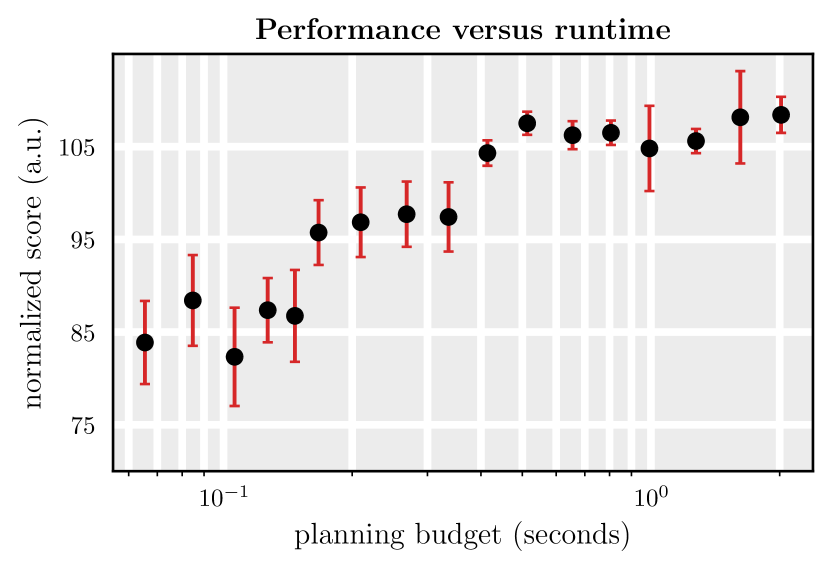
최근 심층 생성 모델(deep generative modeling)의 발전은 모델 기반 강화학습(model-based reinforcement learning) 분야로 진출하고 있으며, 합성곱 U-네트워크 (Kaiser et al., 2020), 확률적 순환 네트워크 (Ke et al., 2018; Hafner et al., 2021a; Ha & Schmidhuber, 2018), 벡터 양자화 오토인코더 (Hafner et al., 2021b; Ozair et al., 2021), 신경 ODE (Du et al., 2020a), 정규화 흐름(normalizing flows) (Rhinehart et al., 2020; Janner et al., 2020), 생성적 적대 신경망 (Eysenbach et al., 2021), 에너지 기반 모델(EBMs; Du et al. 2019), 그래프 신경망 (Sanchez-Gonzalez et al., 2018), 신경 복사장(neural radiance fields) (Li et al., 2021), 그리고 트랜스포머 (Janner et al., 2021; Chen et al., 2021a)로 매개변수화된 동역학 모델을 탐구하는 다양한 연구들이 진행되고 있다. 나아가, Lambert et al. 2020은 장기 예측(long-horizon prediction)을 위한 비자기회귀적(non-autoregressive) 궤적 수준 동역학 모델을 연구했다. 이러한 연구들은 일반적으로 모델과 플래너(planner) 사이에 추상화 장벽(abstraction barrier)이 존재한다고 가정한다. 구체적으로, 학습의 역할은 환경 동역학을 근사하는 것으로 국한되며, 학습이 완료되면 플래너의 형태가 모델의 형태에 크게 의존하지 않기 때문에 모델을 다양한 계획 수립 (Botev et al., 2013; Williams et al., 2015) 또는 정책 최적화 (Sutton, 1990; Wang et al., 2019) 알고리즘 중 어느 것에나 삽입할 수 있다. 우리의 목표는 서로 함께 학습되는 모델과 계획 수립 알고리즘을 설계함으로써 이 추상화 장벽을 허무는 것이며, 그 결과 샘플링과 계획 수립이 거의 동일한 비자기회귀적 궤적 수준 모델을 도출한다.
여러 병렬 연구들은 모델 학습과 계획 수립 사이의 추상화 장벽을 서로 다른 방식으로 허무는 방법을 연구해 왔다. 이러한 접근법에는 보상 예측을 위한 자기회귀적 잠재 공간 모델 학습 (Tamar et al., 2016; Oh et al., 2017; Schrittwieser et al., 2019), 상태 가치(state values)에 의해 모델 학습 목적 함수에 가중치를 부여하는 방법 (Farahmand et al., 2017), 학습된 단일 단계 에너지에 배치(collocation) 기법을 적용하는 방법 (Du et al., 2019; Rybkin et al., 2021) 등이 포함된다. 이와 대조적으로, 우리의 방법은 자기회귀적 방식 대신 궤적의 모든 타임스텝을 동시에 모델링하고 생성하며, 보조 가이드 함수(auxiliary guidance functions)를 통해 샘플링된 궤적의 조건을 지정함으로써 계획을 수립한다.
디퓨전 모델(Diffusion models)은 데이터 생성 과정을 반복적인 노이즈 제거 과정으로 정식화하는 유망한 생성 모델 클래스로 부상했다 (Sohl-Dickstein et al., 2015; Ho et al., 2020). 노이즈 제거 과정은 데이터 분포의 그래디언트를 매개변수화하는 것으로 볼 수 있으며 (Song & Ermon, 2019), 이는 디퓨전 모델을 스코어 매칭(score matching) (Hyvärinen, 2005) 및 EBM (LeCun et al., 2006; Du & Mordatch, 2019; Nijkamp et al., 2019; Grathwohl et al., 2020)과 연결한다. 반복적이고 그래디언트 기반의 샘플링은 유연한 조건화(conditioning) (Dhariwal & Nichol, 2021) 및 구성성(compositionality) (Du et al., 2020b)에 적합하며, 우리는 이를 활용하여 이종 데이터셋으로부터 효과적인 행동을 복원하고 학습 중에 보지 못한 보상 함수에 대한 계획을 수립한다. 디퓨전 모델은 이미지 (Song et al., 2021), 파형 (Chen et al., 2021c), 3D 형상 (Zhou et al., 2021), 텍스트 (Austin et al., 2021) 생성을 위해 개발되어 왔으나, 우리가 알기로는 이전에 강화학습이나 의사결정 맥락에서 사용된 적은 없다.
7 결론
본 논문에서는 궤적 데이터를 위한 노이즈 제거 디퓨전 모델인 Diffuser를 제안했다. Diffuser를 통한 계획 수립은 샘플을 가이드하는 역할을 하는 보조 섭동 함수(auxiliary perturbation functions)가 추가된다는 점을 제외하면 샘플링과 거의 동일하다. 학습된 디퓨전 기반 계획 수립 절차는 희소한 보상(sparse rewards)을 유연하게 처리하는 능력, 재학습 없이 새로운 보상에 대한 계획을 수립하는 능력, 분포 내(in-distribution) 하위 시퀀스들을 결합하여 분포 외(out-of-distribution) 궤적을 생성할 수 있는 시간적 구성성(temporal compositionality)을 포함하여 여러 유용한 특성을 가진다. 우리의 결과는 심층 모델 기반 강화학습을 위한 새로운 클래스의 디퓨전 기반 계획 수립 절차를 제시한다.
코드 참조
감사의 글
초기 초안에 대해 피드백을 준 Ajay Jain과 유익한 토론을 나누어 준 Leslie Kaelbling, Tomás Lozano-Pérez, Jascha Sohl-Dickstein, Ben Eysenbach, Amy Zhang, Colin Li, Toru Lin에게 감사를 표한다. 본 연구는 Microsoft의 컴퓨팅 자원 기부를 통해 부분적으로 지원받았다. M.J.는 미국 국립과학재단(NSF)과 Open Philanthropy Project의 펠로우십 지원을 받았다. Y.D.는 미국 국립과학재단(NSF)의 펠로우십 지원을 받았다.
References
- Andrychowicz et al. (2017) Andrychowicz, M., Wolski, F., Ray, A., Schneider, J., Fong, R., Welinder, P., McGrew, B., Tobin, J., Abbeel, P., and Zaremba, W. Hindsight experience replay. In Advances in Neural Information Processing Systems. 2017.
- Argenson & Dulac-Arnold (2021) Argenson, A. and Dulac-Arnold, G. Model-based offline planning. In International Conference on Learning Representations, 2021.
- Austin et al. (2021) Austin, J., Johnson, D. D., Ho, J., Tarlow, D., and van den Berg, R. Structured denoising diffusion models in discrete state-spaces. In Advances in Neural Information Processing Systems, 2021.
- Bapst et al. (2019) Bapst, V., Sanchez-Gonzalez, A., Doersch, C., Stachenfeld, K. L., Kohli, P., Battaglia, P. W., and Hamrick, J. B. Structured agents for physical construction. In International Conference on Machine Learning, 2019.
- Botev et al. (2013) Botev, Z. I., Kroese, D. P., Rubinstein, R. Y., and L’Ecuyer, P. The cross-entropy method for optimization. In Handbook of Statistics, volume 31, chapter 3. 2013.
- Chen et al. (2021a) Chen, C., Yoon, J., Wu, Y.-F., and Ahn, S. TransDreamer: Reinforcement learning with transformer world models, 2021a.
- Chen et al. (2021b) Chen, L., Lu, K., Rajeswaran, A., Lee, K., Grover, A., Laskin, M., Abbeel, P., Srinivas, A., and Mordatch, I. Decision transformer: Reinforcement learning via sequence modeling. In Advances in Neural Information Processing Systems, 2021b.
- Chen et al. (2021c) Chen, N., Zhang, Y., Zen, H., Weiss, R. J., Norouzi, M., and Chan, W. Wavegrad: Estimating gradients for waveform generation. In International Conference on Learning Representations, 2021c.
- Chua et al. (2018) Chua, K., Calandra, R., McAllister, R., and Levine, S. Deep reinforcement learning in a handful of trials using probabilistic dynamics models. In Advances in Neural Information Processing Systems. 2018.
- Dhariwal & Nichol (2021) Dhariwal, P. and Nichol, A. Q. Diffusion models beat GANs on image synthesis. In Advances in Neural Information Processing Systems, 2021.
- Du et al. (2020a) Du, J., Futoma, J., and Doshi-Velez, F. Model-based reinforcement learning for semi-markov decision processes with neural odes. In Advances in Neural Information Processing Systems, 2020a.
- Du & Mordatch (2019) Du, Y. and Mordatch, I. Implicit generation and generalization in energy-based models. In Advances in Neural Information Processing Systems, 2019.
- Du et al. (2019) Du, Y., Lin, T., and Mordatch, I. Model based planning with energy based models. In Conference on Robot Learning, 2019.
- Du et al. (2020b) Du, Y., Li, S., and Mordatch, I. Compositional visual generation with energy based models. In Advances in Neural Information Processing Systems, 2020b.
- Eysenbach et al. (2021) Eysenbach, B., Khazatsky, A., Levine, S., and Salakhutdinov, R. Mismatched no more: Joint model-policy optimization for model-based rl. arXiv preprint arXiv:2110.02758, 2021.
- Farahmand et al. (2017) Farahmand, A.-M., Barreto, A., and Nikovski, D. Value-aware loss function for model-based reinforcement learning. In International Conference on Artificial Intelligence and Statistics, 2017.
- Fu et al. (2020) Fu, J., Kumar, A., Nachum, O., Tucker, G., and Levine, S. D4RL: Datasets for deep data-driven reinforcement learning. arXiv preprint arXiv:2004.07219, 2020.
- Fujimoto et al. (2019) Fujimoto, S., Meger, D., and Precup, D. Off-policy deep reinforcement learning without exploration. In International Conference on Machine Learning, 2019.
- Garrett et al. (2020) Garrett, C. R., Lozano-Pérez, T., and Kaelbling, L. P. Pddlstream: Integrating symbolic planners and blackbox samplers via optimistic adaptive planning. In International Conference on Automated Planning and Scheduling, 2020.
- Grathwohl et al. (2020) Grathwohl, W., Wang, K.-C., Jacobsen, J.-H., Duvenaud, D., and Zemel, R. Learning the stein discrepancy for training and evaluating energy-based models without sampling. In International Conference on Machine Learning, 2020.
- Ha & Schmidhuber (2018) Ha, D. and Schmidhuber, J. Recurrent world models facilitate policy evolution. In Advances in Neural Information Processing Systems, 2018.
- Hafner et al. (2021a) Hafner, D., Lillicrap, T., Fischer, I., Villegas, R., Ha, D., Lee, H., and Davidson, J. Learning latent dynamics for planning from pixels. In International Conference on Machine Learning, 2021a.
- Hafner et al. (2021b) Hafner, D., Lillicrap, T. P., Norouzi, M., and Ba, J. Mastering atari with discrete world models. In International Conference on Learning Representations, 2021b.
- Harris et al. (2020) Harris, C. R., Millman, K. J., van der Walt, S. J., Gommers, R., Virtanen, P., Cournapeau, D., Wieser, E., Taylor, J., Berg, S., Smith, N. J., Kern, R., Picus, M., Hoyer, S., van Kerkwijk, M. H., Brett, M., Haldane, A., del Río, J. F., Wiebe, M., Peterson, P., Gérard-Marchant, P., Sheppard, K., Reddy, T., Weckesser, W., Abbasi, H., Gohlke, C., and Oliphant, T. E. Array programming with NumPy. Nature, 585(7825):357–362, 2020.
- Ho et al. (2020) Ho, J., Jain, A., and Abbeel, P. Denoising diffusion probabilistic models. In Advances in Neural Information Processing Systems, 2020.
- Hyvärinen (2005) Hyvärinen, A. Estimation of non-normalized statistical models by score matching. Journal of Machine Learning Research, 2005.
- Janner et al. (2020) Janner, M., Mordatch, I., and Levine, S. -models: Generative temporal difference learning for infinite-horizon prediction. In Advances in Neural Information Processing Systems, 2020.
- Janner et al. (2021) Janner, M., Li, Q., and Levine, S. Offline reinforcement learning as one big sequence modeling problem. In Advances in Neural Information Processing Systems, 2021.
- Kaiser et al. (2020) Kaiser, L., Babaeizadeh, M., Miłos, P., Osiński, B., Campbell, R. H., Czechowski, K., Erhan, D., Finn, C., Kozakowski, P., Levine, S., Mohiuddin, A., Sepassi, R., Tucker, G., and Michalewski, H. Model based reinforcement learning for atari. In International Conference on Learning Representations, 2020.
- Ke et al. (2018) Ke, N. R., Singh, A., Touati, A., Goyal, A., Bengio, Y., Parikh, D., and Batra, D. Modeling the long term future in model-based reinforcement learning. In International Conference on Learning Representations, 2018.
- Kelly (2017) Kelly, M. An introduction to trajectory optimization: How to do your own direct collocation. SIAM Review, 59(4):849–904, 2017.
- Kidambi et al. (2020) Kidambi, R., Rajeswaran, A., Netrapalli, P., and Joachims, T. MOReL: Model-based offline reinforcement learning. In Advances in Neural Information Processing Systems, 2020.
- Kingma & Ba (2015) Kingma, D. P. and Ba, J. Adam: A method for stochastic optimization. In International Conference on Learning Representations, 2015.
- Kostrikov et al. (2022) Kostrikov, I., Nair, A., and Levine, S. Offline reinforcement learning with implicit Q-learning. In International Conference on Learning Representations, 2022.
- Kumar et al. (2020) Kumar, A., Zhou, A., Tucker, G., and Levine, S. Conservative Q-learning for offline reinforcement learning. In Advances in Neural Information Processing Systems, 2020.
- Lambert et al. (2020) Lambert, N. O., Wilcox, A., Zhang, H., Pister, K. S., and Calandra, R. Learning accurate long-term dynamics for model-based reinforcement learning. arXiv preprint arXiv:2012.09156, 2020.
- LeCun et al. (2006) LeCun, Y., Chopra, S., Hadsell, R., Huang, F. J., and et al. A tutorial on energy-based learning. In Predicting Structured Data. MIT Press, 2006.
- Levine (2018) Levine, S. Reinforcement learning and control as probabilistic inference: Tutorial and review. arXiv preprint arXiv:1805.00909, 2018.
- Li et al. (2021) Li, Y., Li, S., Sitzmann, V., Agrawal, P., and Torralba, A. 3d neural scene representations for visuomotor control. In Conference on Robot Learning, 2021.
- Misra (2019) Misra, D. Mish: A self regularized non-monotonic neural activation function. In British Machine Vision Conference, 2019.
- Nagabandi et al. (2018) Nagabandi, A., Kahn, G., S. Fearing, R., and Levine, S. Neural network dynamics for model-based deep reinforcement learning with model-free fine-tuning. In International Conference on Robotics and Automation, 2018.
- Nichol & Dhariwal (2021) Nichol, A. Q. and Dhariwal, P. Improved denoising diffusion probabilistic models. In International Conference on Machine Learning, 2021.
- Nijkamp et al. (2019) Nijkamp, E., Hill, M., Zhu, S.-C., and Wu, Y. N. Learning non-convergent non-persistent short-run MCMC toward energy-based model. In Advances in Neural Information Processing Systems, 2019.
- Oh et al. (2017) Oh, J., Singh, S., and Lee, H. Value prediction network. In Advances in Neural Information Processing Systems, 2017.
- Ozair et al. (2021) Ozair, S., Li, Y., Razavi, A., Antonoglou, I., Van Den Oord, A., and Vinyals, O. Vector quantized models for planning. In International Conference on Machine Learning, 2021.
- Paszke et al. (2019) Paszke, A., Gross, S., Massa, F., Lerer, A., Bradbury, J., Chanan, G., Killeen, T., Lin, Z., Gimelshein, N., Antiga, L., Desmaison, A., Kopf, A., Yang, E., DeVito, Z., Raison, M., Tejani, A., Chilamkurthy, S., Steiner, B., Fang, L., Bai, J., and Chintala, S. Pytorch: An imperative style, high-performance deep learning library. In Advances in Neural Information Processing Systems. 2019.
- Posa et al. (2014) Posa, M., Cantu, C., and Tedrake, R. A direct method for trajectory optimization of rigid bodies through contact. The International Journal of Robotics Research, 2014.
- Rhinehart et al. (2020) Rhinehart, N., McAllister, R., and Levine, S. Deep imitative models for flexible inference, planning, and control. In International Conference on Learning Representations, 2020.
- Rybkin et al. (2021) Rybkin, O., Zhu, C., Nagabandi, A., Daniilidis, K., Mordatch, I., and Levine, S. Model-based reinforcement learning via latent-space collocation. In International Conference on Machine Learning, pp. 9190–9201. PMLR, 2021.
- Sanchez-Gonzalez et al. (2018) Sanchez-Gonzalez, A., Heess, N., Springenberg, J. T., Merel, J., Riedmiller, M., Hadsell, R., and Battaglia, P. Graph networks as learnable physics engines for inference and control. In International Conference on Machine Learning, 2018.
- Schrittwieser et al. (2019) Schrittwieser, J., Antonoglou, I., Hubert, T., Simonyan, K., Sifre, L., Schmitt, S., Guez, A., Lockhart, E., Hassabis, D., Graepel, T., Lillicrap, T., and Silver, D. Mastering atari, go, chess and shogi by planning with a learned model. arXiv preprint arXiv:1911.08265, 2019.
- Sohl-Dickstein et al. (2015) Sohl-Dickstein, J., Weiss, E., Maheswaranathan, N., and Ganguli, S. Deep unsupervised learning using nonequilibrium thermodynamics. In International Conference on Machine Learning, 2015.
- Song et al. (2021) Song, J., Meng, C., and Ermon, S. Denoising diffusion implicit models. In International Conference on Learning Representations, 2021.
- Song & Ermon (2019) Song, Y. and Ermon, S. Generative modeling by estimating gradients of the data distribution. In Advances in Neural Information Processing Systems, 2019.
- Sutton (1990) Sutton, R. S. Integrated architectures for learning, planning, and reacting based on approximating dynamic programming. In International Conference on Machine Learning, 1990.
- Talvitie (2014) Talvitie, E. Model regularization for stable sample rollouts. In Conference on Uncertainty in Artificial Intelligence, 2014.
- Tamar et al. (2016) Tamar, A., Wu, Y., Thomas, G., Levine, S., and Abbeel, P. Value iteration networks. In Advances in Neural Information Processing Systems. 2016.
- Tassa et al. (2012) Tassa, Y., Erez, T., and Todorov, E. Synthesis and stabilization of complex behaviors through online trajectory optimization. In International Conference on Intelligent Robots and Systems, 2012.
- Wang (2020) Wang, P. Implementation of denoising diffusion probabilistic models in pytorch, 2020. URL https://github.com/lucidrains/denoising-diffusion-pytorch.
- Wang et al. (2019) Wang, T., Bao, X., Clavera, I., Hoang, J., Wen, Y., Langlois, E., Zhang, S., Zhang, G., Abbeel, P., and Ba, J. Benchmarking model-based reinforcement learning. arXiv preprint arXiv:1907.02057, 2019.
- Williams et al. (2015) Williams, G., Aldrich, A., and Theodorou, E. Model predictive path integral control using covariance variable importance sampling. arXiv preprint arXiv:1509.01149, 2015.
- Witkin & Kass (1988) Witkin, A. and Kass, M. Spacetime constraints. ACM Siggraph Computer Graphics, 1988.
- Wu & He (2018) Wu, Y. and He, K. Group normalization. In European Conference on Computer Vision, 2018.
- Yu et al. (2020) Yu, T., Thomas, G., Yu, L., Ermon, S., Zou, J., Levine, S., Finn, C., and Ma, T. MOPO: Model-based offline policy optimization. In Advances in Neural Information Processing Systems, 2020.
- Zhou et al. (2021) Zhou, L., Du, Y., and Wu, J. 3D shape generation and completion through point-voxel diffusion. In International Conference on Computer Vision, 2021.
부록 A 베이스라인 세부 사항 및 출처
이 섹션에서는 본 연구에서 직접 실행한 베이스라인에 대한 세부 정보를 제공한다. 이전에 표준화된 태스크에서 평가된 베이스라인의 점수에 대해서는 나열된 점수의 출처를 제공한다.
A.1 Maze2D 실험
단일 태스크.
표준 Maze2D 환경에서 CQL과 IQL의 성능은 D4RL 백서 (Fu et al., 2020)의 표 2에 보고되어 있다.
우리는 저자들의 공식 구현을 사용하여 IQL을 실행했다:
우리는 두 개의 하이퍼파라미터에 대해 튜닝을 진행했다:
-
1.
온도(temperature)
-
2.
익스펙타일(expectile)
다중 작업(Multi-task).
IQL이 단일 작업 Maze2D 환경에서 상당한 차이로 가장 강력한 베이스라인이었기 때문에, Multi2D 환경에서만 IQL을 평가했다. IQL을 다중 작업 설정에 적용하기 위해, 우리는 -함수, 가치 함수(value function) 및 정책(policy)이 목표 조건부(goal-conditioned)가 되도록 수정했다. 학습 중 목표를 선택하기 위해 사후 경험 재플레이(hindsight experience replay)에 기반한 전략을 채택했으며, 여기서 궤적의 미래에 마주친 상태들 중에서 목표를 샘플링했다. 학습 백업 을 위해, 미래에 대한 기하 분포에 따라 목표를 샘플링했고,
샘플링된 목표를 바탕으로 보상을 재계산했으며, 업데이트 중에 모든 관련 모델이 목표에 조건화되도록 했다. 테스트 중에는 정책이 실제 정답(ground-truth) 목표에 조건화되도록 했다.
단일 작업 설정에서와 동일한 IQL 매개변수에 대해 튜닝을 진행했다.
A.2 블록 쌓기(Block stacking) 실험
단일 작업(Single-task).
우리는 다음 구현을 사용하여 CQL을 실행했다
https://github.com/young-geng/cql.
그리고 코드의 기본 하이퍼파라미터를 사용했다. 우리는 저자의 원래 구현을 사용하여 BCQ를 실행했다
BCQ의 경우, 두 가지 하이퍼파라미터에 대해 튜닝을 진행했다:
-
1.
할인 요인(discount factor)
-
2.
타우(tau)
다중 작업(Multi-task).
다중 작업 설정에서 BCQ와 CQL을 평가하기 위해, 우리는 -함수, 가치 함수 및 정책이 목표 조건부가 되도록 수정했다. 우리는 Multi2D 환경에서와 같이 목표 재라벨링(goal relabeling)을 사용하여 학습시켰다. 단일 작업 블록 쌓기 실험에서 설명한 것과 동일한 하이퍼파라미터에 대해 튜닝을 진행했다.
A.3 오프라인 로코모션(Offline Locomotion)
BC, CQL, IQL, AWAC의 점수는 Kostrikov et al. (2022)의 표 1에서 가져온 것이다. DT의 점수는 Chen et al. (2021b)의 표 2에서 가져온 것이다. TT의 점수는 Janner et al. (2021)의 표 1에서 가져온 것이다. MOReL의 점수는 Kidambi et al. (2020)의 표 2에서 가져온 것이다. MBOP의 점수는 Argenson & Dulac-Arnold (2021)의 표 1에서 가져온 것이다.
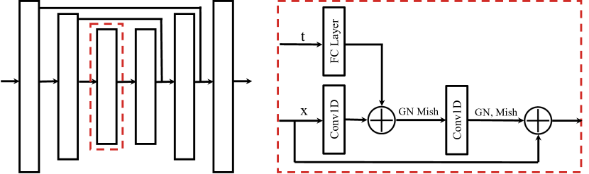
부록 B 테스트 시간 유연성(Test-time Flexibility)
Diffuser가 지정된 구성으로 블록을 쌓도록 안내하기 위해, 우리는 블록 B 위에 블록 A를 쌓는 특정 작업을 지정하는 두 개의 개별 섭동 함수(perturbation function) 을 사용했으며, 그 상세 내용은 아래와 같다.
최종 상태 매칭(Final State Matching) 블록 B 위에 블록 A가 놓여 있는 최종 상태를 강제하기 위해, 우리는 상태 이 블록 B 위에 블록 A가 쌓여 있는 상태를 나타내는지 여부를 판별하는 타임스텝별 분류기로서 섭동 함수 을 학습시켰다. 이 분류기는 확산 모델(diffusion model)과 동일한 데모 데이터에서 학습된다.
접촉 제약 조건(Contact Constraint) Kuka 로봇 팔이 블록 B 위에 블록 A를 쌓도록 안내하기 위해, 우리는 섭동 함수 을 구성한다. 여기서 은 Kuka 팔과 블록 A 사이의 접촉 여부를 지정하는 상태 의 기저 차원에 대응한다. 우리는 궤적의 첫 64 타임스텝 동안 Kuka 팔과 블록 A 사이에 접촉 제약 조건을 적용하며, 이는 계획에서 블록 A와의 초기 접촉에 대응한다.
부록 C 구현 상세
본 섹션에서는 아키텍처를 설명하고 하이퍼파라미터를 기록한다.
- 1.
-
2.
우리는 학습률 과 배치 크기 로 Adam 옵티마이저 (Kingma & Ba, 2015)를 사용하여 모델을 학습시킨다. 모델은 500k 스텝 동안 학습된다.
-
3.
리턴 예측기(return predictor) 는 확산 모델에 사용된 U-Net의 전반부 구조를 가지며, 스칼라 출력을 생성하기 위한 최종 선형 레이어를 포함한다.
-
4.
우리는 모든 보행(locomotion) 태스크에서 32의 계획 수평선(planning horizon) 을 사용하고, 블록 쌓기에서는 , Maze2D / Multi2D U-Maze에서는 , Maze2D / Multi2D Medium에서는 265, Maze2D / Multi2D Large에서는 384를 사용한다.
-
5.
많은 태스크에서 계획 수평선을 줄일 수 있지만, 이에 맞추기 위해 가이드 스케일(guide scale)을 낮추어야 함(예: halfcheetah 태스크에서 수평선이 일 때 0.001로)을 발견했다. 오픈소스 코드의 configuration file은 수정된 스케일과 수평선으로 실행하는 방법을 보여준다.
-
6.
보행 태스크에는 확산 스텝을 사용하고, 블록 쌓기에는 확산 스텝을 사용한다.
-
7.
더 작은 스케일인 을 사용하는 hopper-medium-expert를 제외한 모든 태스크에서 의 가이드 스케일을 사용한다.
-
8.
리턴 예측 에 대해 의 할인 인자(discount factor)를 사용했으나, 이상에서는 계획이 할인 인자의 변화에 상당히 둔감하다는 것을 발견했다.
-
9.
확산 모델을 통해 노이즈 를 예측하는 것과 오염되지 않은 원본 데이터 을 예측하는 것의 선택이 제어 성능에 실질적인 영향을 미치지 않음을 발견했다.